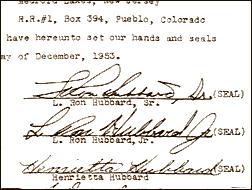

CHAPTER
FIVE
The Religion Angle
Dianetics and Scientology are more a crusade
for sanity than they are a business.
- L. RON HUBBARD, 1954
The things which have been happening... have
removed Scientology entirely from any classification as a psychotherapy .... We can only
exist in the field of religion.
- L. RON HUBBARD,
"The Hope of Man," 1955
In his autobiography Over My Shoulder,
publisher Lloyd Arthur Eshbach remembered taking lunch with John Campbell and Ron Hubbard
in 1949. Hubbard repeated a statement he had already made to several other people. He said
he would like to start a religion, because that was where the money was.
In 1980, Hubbard issued a statement saying
Scientologists had "insisted" their organization become a "Church,"
adding, "It is sometimes supposed that I founded the Church. This is not
correct." Perhaps time had affected Hubbard's memory. The Scientologists maintain
that the Church of Scientology of California was their first Church. It was incorporated
in California on February 18, 1954, by Burton Farber. In an explanatory letter of the
following month, Hubbard said the new "Church" was contracted to the
"Church of American Science," to which it paid a twenty percent tithe.
Naturally, Hubbard was the President of the Church of American Science. 1
In fact, both the Church of American Science and a
Church of Scientology had been incorporated without fanfare by Hubbard in December 1953,
in Camden, New Jersey, along with the "Church of Spiritual Engineering." (See
below.) The Church of American Science was represented as a Christian Church. 2

Evidence of Hubbard's interest in moving Scientology
into a religious position was given in the Armstrong case. On April 10, 1953, Hubbard
wrote from England to Helen O'Brien, who had just taken over the management of Scientology
in the U.S., telling her that it was time to move from a medical to a religious image. His
objectives were to eliminate all other psychotherapies, to salvage his ailing
organization, and, Hubbard was quite candid, to make a great deal of money. Being a
religion rather than a psychotherapy was a purely commercial matter, Hubbard said. He
enthused about the thousands that could be milked out of preclears attracted by this new
promotional approach. 3
As usual, Hubbard was keeping all of the options open.
In his explanatory letter to the membership about the new "Church," he also
introduced the "Freudian Foundation of America." A variety of degrees were
offered to students, including "Bachelor of Scientology," "Doctor of
Scientology," "Freudian Psycho-analyst," and "Doctor of Divinity"
to be issued by the "University of Sequoia," an American diploma mill (which was
closed down by the California Department of Education in 1958). Hubbard had already
received an "honorary doctorate" in philosophy from Sequoia. 4
In New Zealand, the Auckland Scientology group also
became a Church in February 1954. Gradually other centers followed suit, and
"Churches of Scientology" came into being all over the world. These
"Churches" were franchises paying a tithe to the "mother church."
Scientology had become the McDonald's hamburger chain of religion, increasingly absorbing
the mass-production and marketing aspects of North American commerce.
In 1954, Don Purcell, weary of the battle with L. Ron
Hubbard, and unable to make his Dianetic organization self-sustaining, withdrew to join
Art Coulter's "Synergetics," a derivative of Dianetics. Purcell dissolved the
Wichita Dianetic Foundation, and gave its assets to Hubbard. These included the copyrights
to several Hubbard books. The use of the word "Dianetics" and even the name
"L. Ron Hubbard" had been in dispute. Hubbard had complete control of his
original subject once again. He expressed his jubilation in a newsletter to
Scientologists, in which he even forgave Purcell, if only for a short time. Purcell had
given his own attitude succinctly earlier that year: "Ron's motive has always been to
limit Dianetics to the Authority of his teachings. Anyone who has the affrontry [sic] to
suggest that others besides Ron could contribute creatively to the work must be
inhibited." 5
Hubbard had learned from his mistakes. He employed a
simple method of retaining complete control over his many Scientology and Dianetic
corporations. He was not on the board of every corporation, so a check of records would
not show his outright control. He did, however, collect signed, undated resignations from
directors before their appointment. Hubbard also controlled the bank accounts. 6
In May 1953, in a "Professional Auditor's
Bulletin," Hubbard had written: "It is definitely none of my business how you
apply these techniques. I am no policeman ready with boards of ethics and court warrants
to come down on you with a crash simply because you are 'perverting Scientology.' If there
is any policing to be done, it is by the techniques themselves, since they have in
themselves a discipline brought about by their own power. All I can do is put into your
hands a tool for your own use and then help you use it."
By 1955, Hubbard's attitude had changed markedly. In
one of his most bizarre pieces, "The Scientologist: A Manual on the Dissemination of
Material," Hubbard recommended legal action against those who set up as independent
practitioners of Scientology, or "squirrels" : "The purpose of the suit is
to harass and discourage rather than to win. The law can be used very easily to harass,
and enough harassment on somebody who is simply on the thin edge anyway, well knowing that
he is not authorized, will generally be sufficient to cause his professional decease. If
possible, of course, ruin him utterly."
Hubbard further urged that Scientologists employ
private detectives to investigate critics of Scientology, adding: "we should be very
alert to sue for slander at the slightest chance so as to discourage the public press from
mentioning Scientology."
During the late 1950s, most of the independent groups
either became "Churches," or went out of business. They had accepted Hubbard's
direction, and were under contract to his "Hubbard Association of Scientologists
International," but Hubbard wanted complete legal control. The franchised
"Churches" were gradually absorbed into various organizations controlled
directly by Hubbard.
Hubbard continued to write to the FBI's Department of
Communist Activities. He asserted that the Russians had on three occasions tried to
recruit him, and were upset by his patriotic refusal to work for them. By now, Hubbard
felt that his organizations had been harassed from the outset not only by psychiatrists
but also by Communist infiltrators. He claimed that the most recent approach was from an
individual with a position in the U.S. government. 7
A few months later, Hubbard again complained of
Communist infiltration into Scientology organizations. He cited examples of Scientologists
suddenly going insane, and attributed this to psychiatrists using LSD. He made no
suggestion that Scientology itself might have had anything to do with these eruptions of
insanity. He alleged that since offering his brainwashing techniques to the Defense
Department, his organizations had been under constant attack. 8
In September 1955, Hubbard published an issue entitled
"Psychiatrists," calling Scientology "the only Anglo-Saxon development in
the field of the mind and spirit," and insisting that Scientologists inform the
authorities if they suspected that any of their clients had been given LSD surreptitiously
by a psychiatrist.
The FBI tired of Hubbard's missives, and stopped
acknowledging them. One agent wrote "appears mental" on a Hubbard letter.
Hubbard later privately admitted to having taken LSD himself. 9
At the end of 1955, the "Hubbard Communications
Office" in Washington, DC, published a peculiar booklet entitled Brainwashing,
which claimed to be a Russian textbook on "psychopolitics" written by the Soviet
chief of the secret police, Beria. In an elaborate charade, Hubbard claimed the booklet
had arrived anonymously, and mentioned a version in German, published in Berlin in 1947,
and discovered in the Library of Congress. The Library has no record of the German
booklet. The version published by the Scientologists cannot have been written before
December 1953, as there are several references to the "Church of Scientology."
In fact, the author of Brainwashing was none other than L. Ron Hubbard. There are two
witnesses, and the literary style and the slant of the contents provide further evidence
of Hubbard's authorship: 10
You must work until "religion" is
synonymous with "insanity." You must work until the officials of city, county
and state governments will not think twice before they pounce upon religious groups as
public enemies .... Like the official the bona-fide medical healer also believes the worst
if it [religion] can be shown to him as dangerous competition.
Hubbard was perfectly willing to cash in on the
intense interest in brainwashing, a hot topic in the United States with the return of POWs
from North Korea. He was also willing to infect his devotees with his paranoia, and the
booklet highlighted the grand conspiracy supposedly directed against Hubbard and his
organizations.
In 1956, Hubbard recommended that Scientologists
recruit new people by placing the following advertisement in the newspapers: "Polio
victims. A research foundation investigating polio, desires volunteers suffering from the
effects of that illness to call for examination."
Hubbard said that the "research foundation"
could also advertise for asthmatics or arthritics. Further: "Any auditor anywhere can
constitute himself as a minister or an auditor, a research worker in the field of any
illness .... It is best that a minister representing himself as a 'charitable
organization' . . . do the research."
Hubbard also recommended that his followers engage in
"Casualty Contact": "Every day in the daily papers one discovers people who
have been victimized one way or the other by life. It does not much matter whether that
victimizing is in the manner of mental or physical injury .... One takes every daily paper
. . . and cuts from it every story whereby he might have a preclear .... As speedily as
possible he makes a personal call on the bereaved or injured person .... He should
represent himself to the person or the person's family as a minister whose compassion was
compelled by the newspaper story."
This strategy underlines the cold-bloodedness which
Scientology gradually inculcates in its adherents. Compassion becomes a tactical display
rather than natural feeling. "Sympathy" is frowned upon as being emotionally
"down-tone," and the word "victim" is a term of derision. The
Scientologists even have a course which requires that students go into hospitals and,
representing themselves as "volunteer ministers," use Scientology techniques on
the patients, encouraging them to take up Scientology. 11
Hubbard was also making claims that his
"technology" could deal with the effects of radioactive fallout. In 1956, he
gave a lecture series in Washington, styled "The Anti-Radiation Congress
Lectures." In April 1957, he held the "London Congress on Nuclear Radiation and
Health Lectures" at the Royal Empire Society Hall. Three of these lectures were
condensed, and became chapters in his book All About Radiation, allegedly written
by "a Nuclear Physicist and a Medical Doctor." The "Nuclear Physicist"
was L. Ron Hubbard, the "Medical Doctor" hid behind the pseudonym
"Medicus" (the Library of Congress lists him as Richard Farley, quite possibly a
Hubbard pseudonym). In the section purportedly written by "Medicus" we are told
that "some very recent work by L. Ron Hubbard and the Hubbard Scientology
Organization, has indicated that a simple combination of vitamins in unusual doses can be
of value. Alleviation of the remote effects and increased tolerance to radiation have been
the apparent results." 12
While it was possible to defend against prosecution in
the United States for claims of miracle cures by invoking the First Amendment's freedom of
belief, it was stupid of Hubbard to sell his vitamin mixture as a specific for radiation
sickness. In 1958, the Food and Drug Administration (F.D.A.) seized a consignment of
21,000 "Dianazene" tablets, which were marketed by a Scientology company, the
Distribution Center. The tablets were destroyed by the F.D.A. because their labeling
claimed they were a preventative and treatment for radiation sickness. 13
This was not the last time Hubbard tangled with the
F.D.A. Nor was it the last time he claimed a cure for the effects of radiation. The
Scientologists still advertise All About Radiation with a flier which claims that
"L. Ron Hubbard has discovered a formula which can proof a person against
radiation." Scientologists believe that enormous doses of Niacin, a form of vitamin
B3, will protect them from the devastating effects of exposure to radiation in the event
of nuclear war.
The Church encountered other legal problems in the
United States. One of the possible advantages of dubbing an organization
"religious" was the right to claim tax-exempt status. The Washington
"Church" had obtained exempt status in 1956, and other "Churches" had
followed suit. Then, in 1958, exemption was denied. The Washington Church appealed to the
U.S. Court of Claims. The Tax Court ruled that exempt status was rightly withdrawn,
because Hubbard and his wife were benefiting financially from the Church of Scientology
beyond reasonable remuneration.
Between June 1955 and June 1959, Hubbard had been
given $108,000 by the Scientology Church, along with the use of a car, all expenses paid.
The Church maintained a private residence for him through 1958 and 1959. His family,
including his son Nibs and his daughter Catherine, had also withdrawn thousands of
dollars. Mary Sue Hubbard derived over $10,000 income by renting property to the Church.
On top of this, Hubbard received his tithes (ten percent, or more) from Scientology
organizations throughout the world. Despite Hubbard's pronouncements, Scientology and
Dianetics were very definitely a business, a profit-making organization, run by Hubbard
for his personal enrichment. 14
Through the 1950s, Scientology tried to develop a good
public image. The therapy had become a religious practice, compared by Hubbard to the
Christian confessional, and the therapists had become ministers. The trappings of religion
were assembled, including ministerial garb complete with dog-collar, and wedding, naming
and funeral rites. Hubbard's berserk outbursts were lost amid a welter of new auditing
procedures. His paranoia was better contained, though Church leaders were told to cease
communication with critics of Scientology whom Hubbard called "Merchants of
Chaos," the beginnings of the doctrine of "disconnection." 15
To the general public, Scientology was represented as
a humanitarian, religious movement, intent upon benefiting all mankind. Its opponents were
dangerous enemies of freedom, and were tarred with unfashionable epithets such as
communist, homosexual, or drug addict. Opponents were portrayed as members of a deliberate
conspiracy to silence Hubbard, and bring down the "shades of night" over the
Earth. 16
To its membership, Scientology was represented as a
science, liberating man from all his disabilities, and freeing in him undreamt abilities.
To the Church hierarchy, Scientology was the only hope of freedom for mankind, and must be
protected at all costs. Hubbard was nothing short of a Messiah, whose wisdom and
perception far outstripped that of any mere mortal. Hubbard's commandments might at times
be unfathomable, but his word was law.
The Hubbard Communication Office Manual of Justice
laid down the law for Scientology staff members. In it Hubbard wrote: "People attack
Scientology; I never forget it, always even the score."
The Manual of Justice introduced a
comprehensive "intelligence" system into Hubbard's organizations. Hubbard wrote:
"Intelligence is mostly the collection of data on people which may add up to a
summary of right or wrong actions on their part .... It is done all the time about
everything and everybody .... When a push against Scientology starts somewhere, we go over
the people involved and weed them out."
If "intelligence" failed, then investigation
was called for: "When we need somebody haunted we investigate .... When we
investigate we do so noisily always. And usually investigation damps out the trouble even
when we discover no really pertinent facts. Remember that - by investigation alone
we can curb pushes and crush wildcat people and unethical 'Dianetics and Scientology'
organizations," and, "intelligence we get with a whisper. Investigation we do
with a yell. Always."
Hubbard explained to staff members: "Did you ever
realize that any local viciousness against Scientology organizations is started by
somebody for a purpose? Well, it is . . . rumours aren't 'natural'. When you run them down
you find a Commie or a millionaire who wants us dead .... You find amongst all our decent
people some low worm who has been promised high position and pay if we fail .... When you
have found your culprit, go to the next step, Judgment and Punishment."
Hubbard's instruction to use private detectives has
certainly been followed by the Scientology Church over the ensuing years. The reader of
the confidential Manual is told: "Of twenty-one persons found attacking
Dianetics and Scientology... eighteen of them under investigation were found to be members
of the Communist Party or criminals, usually both. The smell of police or private
detectives caused them to fly, to close down, to confess. Hire them and damn the cost when
you need to."
Magazine articles unfavorable to Scientology were to
be met with a letter demanding retraction, followed by an investigation of the author for
his "criminal or Communist background" by a private detective. The magazine
would be threatened with legal action, and the author sent "a very tantalizing letter
... tell him we know something interesting about him," and invited to a meeting,
"chances are he won't arrive. But he'll sure shudder into silence."
In the "Judgment and Punishment" section of
his Manual of Justice Hubbard wrote:
We may be the only people on Earth with a
right to punish... never punish beyond our easy ability to remedy by auditing [a difficult
point in an organization which believes it can mend the hurt of former lives and deaths]...
Our punishment is not as unlimited [sic] as you might think. Dianetics and Scientology are
self-protecting sciences. If one attacks them one attacks all the know-how of the mind . .
. Them are men dead because they attacked us - for instance Dr. Joe Winter. He simply
realized what he did and died. There are men bankrupt because they attacked us - Purcell,
Ridgway, Ceppos [Ridgway and Ceppos published Dianetics in England and the U.S.
respectively].
In the Manual, Hubbard's suggested
punishments were actually mild, consisting largely of the cancellation of any certificates
awarded by his organizations. He suggested that an organization "shoot the offender
for the public good and then patch him up quietly." A mood was being created in which
staff members would become "deployable agents," as sociologist Roy Wallis called
Hubbard's henchmen in his excellent study of Scientology. After all, Hubbard never gave
any indication of the possibility that a complaint against him or against Scientology
could be justifiable. The tactic of "noisy investigation" originated in the Manual,
and came to mean harassment by defamation. Hubbard certainly did not mind if the
defamation was grossly exaggerated, or even a total fabrication. If you throw enough mud,
some will stick. The Manual of Justice clearly suggests outright blackmail.
The Scientology organizations grew steadily, and, in
the spring of 1959, Hubbard purchased the Maharajah of Jaipur's English manor house and
estate in the beautiful Sussex countryside, at Saint Hill village, a few miles from East
Grinstead.
FOOTNOTES
Additional sources: Technical
Bulletins of Dianetics & Scientology vol.1, p.298; vol.2, p.32, 157, 267-9,
353-5; What Is Scientology? (1978 ed.), p.142, 154
1. Professional Auditors
Bulletin 74, "Washington Bulletin no.1," 6 March 1956 (only in original)
2. L. Ron Hubbard Jr.,
transcript of Clearwater Hearings vol.1 p.286, May 1982; Wallis, The Road to Total
Freedom, p.128.
3. Vol 12. pp. 1976, 26, 4619
of transcript of Church of Scientology of California vs. Gerald Armstrong,
Superior Court for the County of Los Angeles, case no. C 420153; exhibit 500-4V in ibid.
4. Technical Bulletins of
Dianetics & Scientology vol.2, p.32; St Petersburg Times,
"Scientology," p.17.
5. Technical Bulletins of
Dianetics & Scientology vol.2, pp. 84, 124; Purcell quote - "Dianetics
Today" newsletter, January 1954.
6. Vol 12. pp. 2008, 26, 4643
of transcript of Church of Scientology of California vs. Gerald Armstrong,
Superior Court for the County of Los Angeles, case no. C 420153; exhibits 500-5 and 500-5F
in ibid; Kima Douglas in vol. 25, p.4435 of ibid.
7. Hubbard letter to FBI, 29
July 1955
8. Hubbard letter to FBI, 7
September 1955
9. Interview with David Mayo,
October 1986, Palo Alto
10. Technical Bulletins
of Dianetics & Scientology vol.2, pp.309, 312; letter to the author from
Henrietta de Wolf; interview with former executive at Washington, DC.
11. Hubbard, The
Volunteer Minister's Handbook (1979), p.77, part K
12. Technical Bulletins
of Dianetics & Scientology vol.2, pp.378, 364; vol.3, p.27; dustwrapper of All
About Radiation.
13. Wallis, pp.190, 128
14. Sir John Foster, Report
into the Practices and Effects of Scientology (HMSO, 1971), para 118
15. Donna Reeve in vol. 24,
p. 4185 of transcript of Church of Scientology of California vs. Gerald Armstrong,
Superior Court for the County of Los Angeles, case no. C 420153.
16. Philadelphia Doctorate
Course #21 |